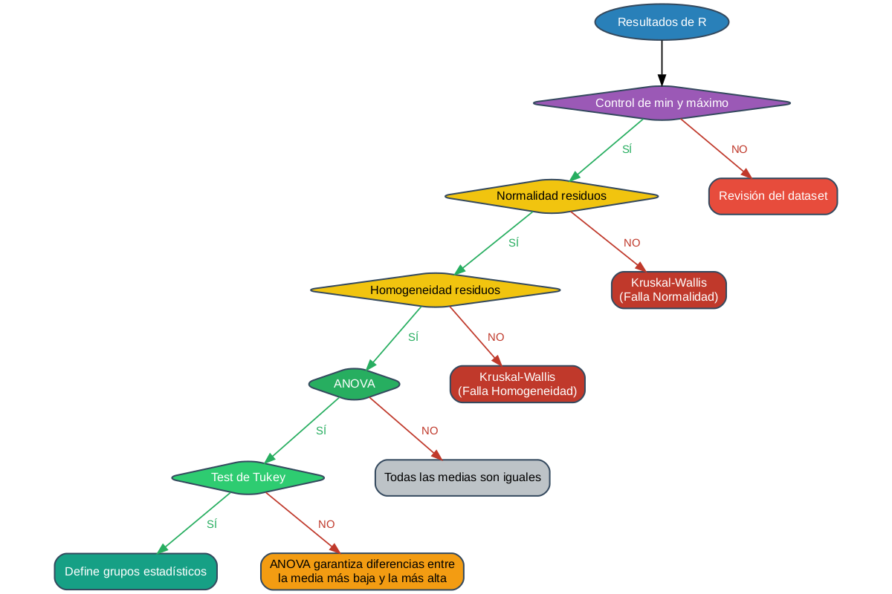

✅ Diagrama guardado como: anova_diagram.png- Step 01: Control sobre la variable respuesta.
- Step 02: Verificación del requisito de normalidad de los residuos.
- Step 03: Verificación del requisito de homogeneidad de varianzas.
- Step 04: Interpretación del test de Anova.
- Step 05: Interpretación del test de Tukey.

Caso Step01...Control Step02...Normalidad Step03...Homogeneidad
1 Case 1 No No/Yes No/Yes
2 Case 2 Yes No No/Yes
3 Case 3 Yes Yes No
4 Case 4 Yes Yes Yes
5 Case 5 Yes Yes Yes
6 Case 6 Yes Yes Yes
Step04...Anova Step05...Tukey
1 No/Yes No/Yes
2 No/Yes No/Yes
3 No/Yes No/Yes
4 No No/Yes
5 Yes No
6 Yes Yes
Decision
1 Si se tiene la certeza de que el valor mínimo y/o el máximo no corresponden a valores posibles de la variable, inmediatamente queda descarcada la posibilidad de análisis estadístico hasta generar (si es posible) una verificación de los datos del dataset.
2 Al no cumplirse el requisito de normalidad de los residuos, queda descartada de manera inmedianta la utilización del test de Anova a 1 Factor sobre el dataset. Debe aplicarse alguna otra herramienta estadística como podría ser un Modelo Lineal General Mixto, un Modelo Lineal Generalizado, un Modelo Lineal Generalizado Mixto o un test de Kruskal-Wallis.
3 Al no cumplirse el requisito de homogeneidad de los residuos, queda descartada de manera inmediata la utilización del test de ANova a 1 Factor sobre este data set. Debe aplicarse alguna otra herramienta estadística como podría ser un Modelo Lineal General Mixto, un Modelo Lineal Generalizado, un Modelo Lineal Generalizado Mixto o un test de Kruskal-Wallis.
4 Todos los requisitos se cumplen. Las conclusiones obtenidas de Anova son válidas. No se rechaza la hipóteiss nula de Anova. Todas las medias son estadísticament iguales. Se descarta la interpretación del test de Tukey. La interpretación del test de Tukey y sus grupos estadísticos está supeditada al rechazo de la hipótesis de Anova. Indistintamente de los grupos detallado por Tukey o por cualquier otro test de comparaciones múltiples, todas las medias son estadísticamente iguales en este caso. Si el operador necesita hacer una recomenadación, debe recomendar a cualquier nivel del factor por igual. El hecho de no rechazar la Hipótesis nula indica que las diferencias matemáticas entre las medias se deben solo por azar.
5 Todos los requisitos de Anova se cumplen. Las conclusiones obtendias de Anova son válidas. Se rechaza la hipótesis nula de Anova. Existe al menos una media diferente. Las diferencias entre las medias no son solo por azar. Indistintamente del detalle que otorgue Tukey, en este punto anova otorga pruebas suficientes para decir que existen diferencias estadísticamente significativas entre el nivel del factor con la media más alta y el nivel del factor con la media más baja. Al rechazar la hipótesis nual de Anova es válido interpretar el test de Tukey. En este caso el test de Tukey no distingue grupos estadísticos a pesar de que Anova rechazó la Hipótesis nula. Anova es un test más potente que Tukey, por lo tanto se afirma que existen diferencias al menos entre el nivel del factor con la media más grande y el nivel del factor con la más chica; y nada puede decirse del resto de los niveles. Es un caso raro, pero que sucede. Puede pensarse en cambiar el test de comparación múltiples por otro, si es oportuno.
6 Todos los requisitos de Anova se cumplen. Las conclusiones obtendias de Anova son válidas. Se rechaza la hipótesis nula de Anova. Existe al menos una media diferente. Las diferencias entre las medias no son solo por azar. Indistintamente del detalle que otorgue Tukey, en este punto anova otorga pruebas suficientes para decir que existen diferencias estadísticamente significativas entre el nivel del factor con la media más alta y el nivel del factor con la media más baja. Al rechazar la hipótesis nula de Anova es válido interpretar el test de Tukey. En este caso el test de Tukey distingue al menos 2 grupos estadísticos. El operador debe observar la tabla de TUkey e interprer los grupos de acuerdo a las letras asignadas por el test de Tukey, teniendo en consideración que TUkey peude otorgar varias letras a cada nivel del factor. El operador puede hacer recomendaciones de niveles del factor teniendo en cuenta el marco estadístico y el marco original del trabajo. Es común recomendar las medias más altas o las medias más bajas de acuerdo al cotexto de los datos.\nEn el contexto de Tukey, niveles del factor que comparten al menos 1 letra son estadísticamente iguales. Lleva cierto tiempo acostumbrarse a interpretar de manera correcta la tabla de Tukey. Existen también otros contextos en donde no se busca necesariamente las medias más bajas o las más altas, como por ejemplo buscar específicamente que nivieles dle factor son iguales estadísticamente a un nivel en particular. El test de Tukey puede seraplicado también en este contexto.